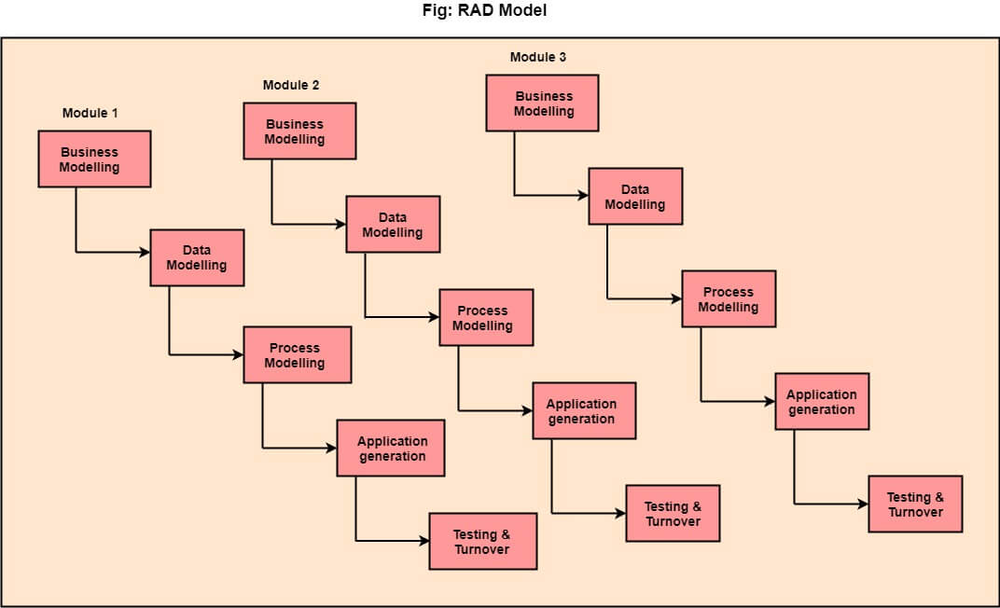

Rapid Application Development (RAD)
RAD on lineaarse järjestikuse tarkvaraarenduse protsessimudel, mis rõhutab lühikest arendustsüklit, kasutades elemendipõhist ehituslähenemist. Kui nõuded on hästi mõistetud ja kirjeldatud ning projekti ulatus on piiratud, võimaldab RAD protsess arendustiimil luua täielikult toimiva süsteemi lühikese aja jooksul.
RAD (Kiire rakendusearendus) on kontseptsioon, mille kohaselt saab tooteid arendada kiiremini ja parema kvaliteediga läbi:
- Nõuete kogumine töötubade või fookusgruppide abil
- Prototüüpimine ja varane, korduv kasutajate testimine kujunduste osas
- Tarkvarakomponentide taaskasutamine
- Range ajakava, mis viitab disaini täiustustele järgmise tooteversiooni jaoks
- Vähem formaalsust ülevaatustes ja muus meeskonnakommunikatsioonis

RAD erinevad faasid on järgmised:
- Ärimudel: Ärimudeli faasis määratletakse äriprotsesside vaheline teabevoog, vastates küsimustele nagu millised andmed juhivad äriprotsessi, milliseid andmeid genereeritakse, kes neid genereerib, kuhu teave läheb, kes seda töötleb jne.
- Andmemudel: Ärimudelilt kogutud andmed viiakse edasi andmemudeli faasi, kus need töötatakse välja kogumiks andmeobjekte (üksusi), mis on vajalikud äri toetamiseks. Iga andmeobjekti (üksuse) atribuudid (omadused) tuvastatakse ning määratletakse nende andmeobjektide (üksuste) vahelised seosed.
- Protsessimudel: Andmemudeli faasis määratletud teabeobjekte muudetakse, et saavutada vajalik andmevool äriprotsessi rakendamiseks. Luuakse töötlemiskirjeldused andmeobjekti lisamiseks, muutmiseks, kustutamiseks või taastamiseks.
- Rakenduse loomine: Automatiseeritud tööriistu kasutatakse tarkvara konstrueerimise hõlbustamiseks; isegi kasutatakse 4. GL tehnikaid.
- Testimine ja üleandmine: Paljud programmeerimiskomponendid on juba testitud, kuna RAD rõhutab taaskasutust. See vähendab üldist testimisaega. Kuid uus osa tuleb testida ning kõiki liideseid tuleb täielikult kasutada.
RAD mudeli eelised:
- See mudel on paindlik muutustele.
- Selles mudelis on muudatused vastuvõetavad.
- Iga faas RAD-is toob kliendile kõrgeima prioriteediga funktsionaalsuse.
- See vähendab arendusaega.
- See suurendab funktsioonide taaskasutamist.
RAD mudeli puudused:
- See nõuab kõrgelt kvalifitseeritud disainereid.
- Kõik rakendused ei ühildu RAD-iga.
- Väiksemate projektide korral ei saa kasutada RAD mudelit.
- Kõrge tehnilise riski korral ei ole see sobiv.
- Vajalik kasutaja osalus.